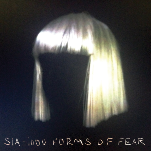

|  | Sia Furler atau dengan nama lengkapnya Sia Kate Isobelle Furler adalah seorang penyanyi berkebangsaan Australia, yang sekarang tinggal di Los Angeles, United States. Pada tanggal 4 juli 2014, Sia melirik album nya yang ke-6, dengan judul album 1000 Forms Of Fear, atau dalam bahasa Indonesianya <>"1000 bentuk-bentuk Ketakutan" |
Berikut adalah lagu-lagu yang di rilis oleh Sia dalam albumnya, 1000 Forms of Fear:
Album Sia yang satu ini, berhasil mendapatkan beberapa nominasi dan penghargaan, di mana albumnnya Sia yang satu ini sangatlah booming dan masuk dalam best 10 Album in the world, yang membuat kesuksesan Sia melambung tinggi
Berikut adalah beberapa penghargaan dan nominasi yang berhasil didapatkan oleh Sia:
| Jenis Penghargaan | Nama Penghargaan | Tahun Penghargaan | Certification |
|---|---|---|---|
| ARIA Awards | Best Pop Release | 2014 | Platinum |
| Best Female Artist | |||
| Album Terbaik | |||
| Best Cover Art | Diamond | ||
| Grammy Awards | Prduser Tahunan Terbaik | 2015 | Gold |